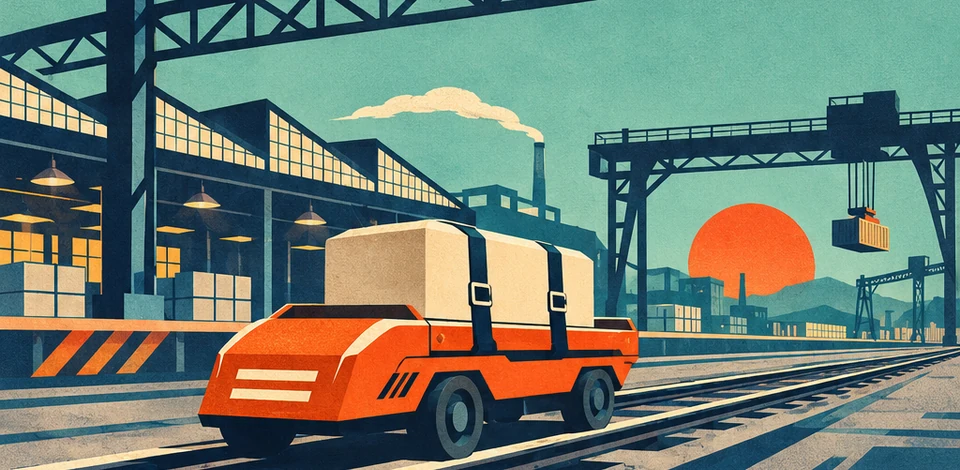
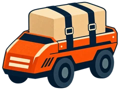

Route 01 / 03

Operator guide
Line up a gate under the cart, then dispatch it through every conveyor belt.
Use ← → to shift, Enter to dispatch on the desk, and R to restart. Tab reaches every button. Sound can be muted in the header.